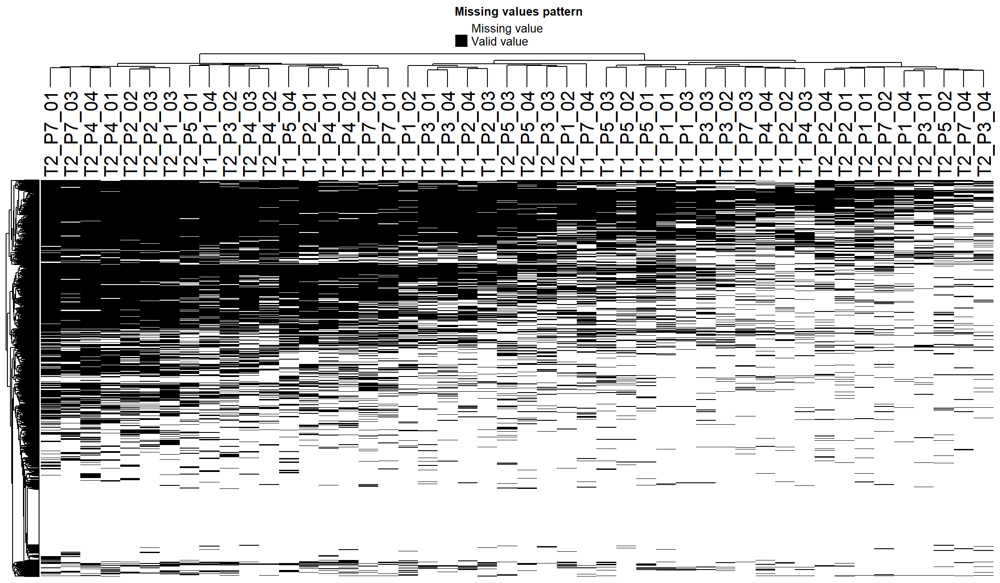
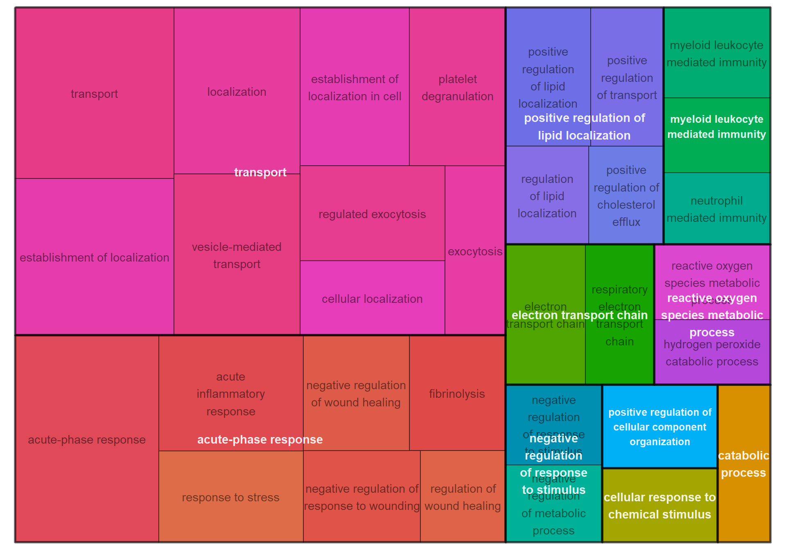

T1 vs T2 population
Fabio Bedin | MS-Unit
Last updated: 2021-07-23
Checks: 7 0
Knit directory: OC_Nezi/
This reproducible R Markdown analysis was created with workflowr (version 1.6.2). The Checks tab describes the reproducibility checks that were applied when the results were created. The Past versions tab lists the development history.
Great! Since the R Markdown file has been committed to the Git repository, you know the exact version of the code that produced these results.
Great job! The global environment was empty. Objects defined in the global environment can affect the analysis in your R Markdown file in unknown ways. For reproduciblity it’s best to always run the code in an empty environment.
The command set.seed(20210520) was run prior to running the code in the R Markdown file. Setting a seed ensures that any results that rely on randomness, e.g. subsampling or permutations, are reproducible.
Great job! Recording the operating system, R version, and package versions is critical for reproducibility.
Nice! There were no cached chunks for this analysis, so you can be confident that you successfully produced the results during this run.
Great job! Using relative paths to the files within your workflowr project makes it easier to run your code on other machines.
Great! You are using Git for version control. Tracking code development and connecting the code version to the results is critical for reproducibility.
The results in this page were generated with repository version 66a229c. See the Past versions tab to see a history of the changes made to the R Markdown and HTML files.
Note that you need to be careful to ensure that all relevant files for the analysis have been committed to Git prior to generating the results (you can use wflow_publish or wflow_git_commit). workflowr only checks the R Markdown file, but you know if there are other scripts or data files that it depends on. Below is the status of the Git repository when the results were generated:
Ignored files:
Ignored: .RData
Ignored: .Rhistory
Ignored: .Rproj.user/
Ignored: analysis/.RData
Untracked files:
Untracked: Rplot.png
Untracked: Rplot01.png
Untracked: T1_vs_T2.tex
Untracked: UP_p1_t1_t2.txt
Untracked: analysis/T2_R_vs_T2_S_gene_name.txt
Untracked: analysis/test.cys
Untracked: code/custom_functions.R
Untracked: data/anova_table_t1_t2.txt
Untracked: data/anova_table_t1_t2_filt_1500.txt
Untracked: data/anova_table_t1_tme1.txt
Untracked: data/anova_table_t1_tme1_filt_1500.txt
Untracked: data/anova_table_t2_tme2.txt
Untracked: data/anova_table_t2_tme2_filt_1500.txt
Untracked: data/expdesign.tsv
Untracked: data/expdesign_SI_S_R.tsv
Untracked: data/expdesign_old_exp.tsv
Untracked: data/proteinGroups.txt
Untracked: gene_name_BP_anova.txt
Untracked: output/GO_preliminary_LN.pptx
Untracked: output/results_T1_vs_TME1_patients.xlsx
Untracked: output/results_T1_vs_TME1_population.xlsx
Untracked: output/results_T1_vs_TME1_sub-populations.xlsx
Untracked: output/results_T2_vs_T1_patients.xlsx
Untracked: output/results_T2_vs_T1_population.xlsx
Untracked: output/results_T2_vs_T1_sub-populations.xlsx
Untracked: output/results_T2_vs_TME2_patients.xlsx
Untracked: output/results_T2_vs_TME2_population.xlsx
Untracked: output/results_T2_vs_TME2_sub-populations.xlsx
Untracked: output/results_TME2_vs_TME1_population.xlsx
Untracked: site_libs/
Note that any generated files, e.g. HTML, png, CSS, etc., are not included in this status report because it is ok for generated content to have uncommitted changes.
These are the previous versions of the repository in which changes were made to the R Markdown (analysis/T1_vs_T2_population.Rmd) and HTML (docs/T1_vs_T2_population.html) files. If you’ve configured a remote Git repository (see ?wflow_git_remote), click on the hyperlinks in the table below to view the files as they were in that past version.
| File | Version | Author | Date | Message |
|---|---|---|---|---|
| Rmd | 66a229c | FabioBedin | 2021-07-23 | Final update 23-07-2021 |
Ovarian cancer dataset
knitr::opts_chunk$set(fig.align = "center")
library("MBQN")
library("dplyr")
library("tidyr")
library("DEP")
library("SummarizedExperiment")
library("preprocessCore")
library("tibble")
library("ggplot2")
library("enrichR")
library("DT")
library("stringr")
library("patchwork")
library("here")
library("datapasta")
library("gprofiler2")
library("org.Hs.eg.db")
library("rrvgo")
library("openxlsx")
select <- dplyr::selectsource(here::here("code/custom_functions.R"))header_style <- createStyle(
fontSize = 12,
fontColour = "#0f0f0f",
fgFill = "#faf2ca",
halign = "center",
border = "TopBottomLeftRight"
)
body_style <- createStyle(
halign = "center",
border = "TopBottomLeftRight"
)
excel <- createWorkbook()Introduction
For this analysis i will analyze T2 and T1 populations, to indentify interesting HITs .
data <- read.csv(here::here("data/proteinGroups.txt"), header = TRUE,stringsAsFactors = FALSE, sep = "\t")
expdesign <- read.table(here::here("data/expdesign.tsv"), header = T, stringsAsFactors = F)
cond_1<-"T2"
cond_2<-"T1"
conditions<-c(cond_1,cond_2)
test<- paste(cond_1,cond_2,sep="_vs_")
expdesign <- subset(expdesign, condition %in% conditions)Data wrangling
First, we need to wrangling the original dataset. From the proteinGroups obtained by MaxQuant software, remove proteins that are marked form the software as potential contaminant, only identify by site and reverse.
data <- data[data$Reverse != "+" & data$Potential.contaminant != "+" & data$Only.identified.by.site != "+",]
data_unique <- make_unique(data, "Gene.names", "Protein.IDs", delim = ";")
columns<-match(paste("LFQ.intensity.",expdesign$label,sep=""),colnames(data_unique))
data_se <- make_se(data_unique, columns, expdesign)To understand the structure of the dataset and define a strategy, I use different quality control polts:
Quality control Plots
All this plot can also hepl to decide the strategy to filter the missing data.
Frequency plot
plot_frequency(data_se)
Number of protein per sample
plot_numbers(data_se)
Distibution of each sample
plot_normalization(data_se)The problem of missing data
In the original dataset, the percentage of missing data is 64.55% and can be visualized with the following heatmap.
plot_missval(data_se)
Filter missing data
To reduce the percentage of missing data I have decided to filter samples with less then 1500 identify proteins. Afrer that, I also use a second strong filter to remove all the proteins that are not identify in 75% in each replicates in at least 1 groups.
data_filt <- filter_bad_samples(data_se, thr = 1500)
data_filt <- filter_missval(data_filt, thr = 4)These plot show the effect of the filters. Now we reduce the percetage of missing data in the dataset down to: 17.8%.
Plots with filters
protein coverage
plot_coverage(data_filt)Number of protein per sample
plot_numbers(data_filt)Distibution
plot_normalization(data_filt)Plot missing data
plot_missval(data_filt)Unique
Proteins unique for each conditions after filters. This Interesting proteins will also be imputed for use in differential analysis.
unique_pair(data_filt, conditions)Joining, by = "name"Imputation
An idealized version of a label-free discovery mass spectrometry proteomics experiment would provide absolute abundance measurements for a whole proteome, across varying conditions. Unfortunately, this ideal is not realized. Measurements are made on peptides requiring an inferential step to obtain protein level estimates. The inference is complicated by experimental factors that necessitate relative abundance estimation and result in widespread non-ignorable missing data. Relative abundance on the log scale takes the form of parameter contrasts. In a complete-case analysis, contrast estimates may be biased by missing data and a substantial amount of useful information will often go unused.
To avoid this problem, we impute missing data using random draws from a manually defined left-shifted Gaussian distribution.
set.seed(20210520)
data_imp_man <- impute(data_filt, fun = "man", shift = 1.8, scale = 0.3)This plot show the effect of imputation, as expected a new population of low intensity values as emerged.
plot_imputation(data_filt, data_imp_man)Differential enrichment analysis
Protein-wise linear models combined with empirical Bayes statistics are used for the differential enrichment analysis (or differential expression analysis).
data_diff <- test_diff_BH(data_imp_man, type = "manual", test = test)Tested contrasts: T2_vs_T1I define sifnificant protein with FDR = 0.05 and FC = 1
dep <- add_rejections(data_diff, alpha = 0.05, lfc = 1)
results<-get_results(dep)There are 322 significant proteins within all comparisons. The following table shows the results:
results %>%
select(starts_with("name") | starts_with(test)) %>%
filter(across(ends_with("significant"))) %>%
arrange(across(ends_with("p.adj"))) %>%
mutate(across(2:3, format, scientific = T, digits = 2)) %>%
dplyr::rename_with(~ tolower(gsub(paste0(test,"_"), "", .x)), .cols = starts_with(test)) %>%
mutate(significant = str_to_title(significant)) %>%
dplyr::rename(FC = ratio) %>%
DT::datatable(options = list(
columnDefs = list(list(className = 'dt-center', targets = 1:5)),
pageLength = 10)) %>%
formatStyle('FC', backgroundColor = styleInterval(c(-1, 1), c('lightblue', 'white', 'tomato'))) %>%
formatStyle('significant', color = styleEqual(c("True", "False"), c('green', 'red')))Visualization of the results
The results from the analysis can be easily visualized by a number of plot functions.
PCA
plot_pca(dep, x = 1, y = 2, n = 500, point_size = 4, indicate = "condition")Correlation matrix
plot_cor(dep, significant = TRUE, lower = 0, upper = 1, pal = "Reds")Volcano plot
plot_volcano(dep, contrast=test, add_names=T,label_size=5,adjusted = F)Cluster Heatmap
plot_heatmap(dep, type = "centered", kmeans = TRUE, k = 3, show_row_names = F, indicate = "condition",col_limit = 5)
Gene Ontology
T2
Gname <- results %>% filter(significant & get(paste0(test, "_ratio")) > 0) %>% pull(name)
GO <- gost(query = Gname, organism = "hsapiens", sources = c("GO:BP", "GO:MF", "GO:CC", "KEGG"), ordered_query = T)
gostplot(GO, capped = TRUE, interactive = TRUE)Table T2
GO$result %>%
as.data.frame() %>%
select(starts_with(c("source", "term_name", "p_value", "term_size", "intersection_size"))) %>%
arrange(p_value) %>%
mutate(p_value = format(p_value, scientific = T, digits = 2)) %>%
DT::datatable(options = list(
columnDefs = list(list(className = 'dt-center', targets = 1:6)),
pageLength = 10)) %>%
formatStyle('source', backgroundColor = styleEqual(c("GO:BP", "GO:MF", "GO:CC", "KEGG"), c('orange', 'tomato', 'lightgreen', 'violet')))Treemap T2
simMatrix <- GO$result %>%
as.data.frame() %>%
filter(source == "GO:BP") %>%
pull(term_id) %>%
calculateSimMatrix(orgdb="org.Hs.eg.db", ont="BP", method="Rel")
scores <- setNames(-log10(GO$result$p_value), GO$result$term_id)
reducedTerms <- reduceSimMatrix(simMatrix,
scores,
threshold=0.7,
orgdb="org.Hs.eg.db")
treemapPlot(reducedTerms)ScatterPlot T2
scatterPlot(simMatrix, reducedTerms, size = "score", labelSize = 5)T1
Gname <- results %>% filter(significant & get(paste0(test, "_ratio")) < 0) %>% pull(name)
GO <- gost(query = Gname, organism = "hsapiens", sources = c("GO:BP", "GO:MF", "GO:CC", "KEGG"), ordered_query = T)
gostplot(GO, capped = TRUE, interactive = TRUE)Table T1
GO$result %>%
as.data.frame() %>%
select(starts_with(c("source", "term_name", "p_value", "term_size", "intersection_size"))) %>%
arrange(p_value) %>%
mutate(p_value = format(p_value, scientific = T, digits = 2)) %>%
DT::datatable(options = list(
columnDefs = list(list(className = 'dt-center', targets = 1:6)),
pageLength = 10)) %>%
formatStyle('source', backgroundColor = styleEqual(c("GO:BP", "GO:MF", "GO:CC", "KEGG"), c('orange', 'tomato', 'lightgreen', 'violet')))Treemap T1
simMatrix <- GO$result %>%
as.data.frame() %>%
filter(source == "GO:BP") %>%
pull(term_id) %>%
calculateSimMatrix(orgdb="org.Hs.eg.db", ont="BP", method="Rel")
scores <- setNames(-log10(GO$result$p_value), GO$result$term_id)
reducedTerms <- reduceSimMatrix(simMatrix,
scores,
threshold=0.7,
orgdb="org.Hs.eg.db")
treemapPlot(reducedTerms)
ScatterPlot T1
scatterPlot(simMatrix, reducedTerms, size = "score", labelSize = 5)
a <- get_df_wide(dep) %>%
select(c(name, Protein.IDs, Protein.names, starts_with(conditions), -ends_with(c("CI.R", "CI.L")))) %>%
dplyr::rename_with(., ~ gsub(pattern = paste0(test, "_"), replacement = "", .), starts_with(test)) %>%
dplyr::rename_with(., ~ gsub(pattern = "^", replacement = "LFQ_intensity_", .), starts_with(conditions)) %>%
dplyr::rename(FC = diff) %>%
mutate(significant = if_else(significant, "+", "")) %>%
arrange(desc(significant), p.val) %>%
mutate(across(c(p.adj, p.val), format, scientific = T, digits = 2)) %>%
mutate(across(starts_with(c("LFQ", "FC")), .fns = ~ round(.x, digits = 2))) %>%
relocate(significant) %>%
relocate(starts_with("LFQ"), .after = p.val)
addWorksheet(excel, sheetName = test, gridLines = F)
writeDataTable(excel, sheet = test, x = a, keepNA = T, na.string = "NaN")
n_row <- a %>% nrow() + 1
n_col <- a %>% ncol()
setColWidths(excel, sheet = test, cols = 1:n_col, widths = 21)
addStyle(excel, sheet = test, style = header_style, rows = 1, cols = 1:n_col, gridExpand = T)
addStyle(excel, sheet = test, style = body_style, rows = 2:n_row, cols = 1:n_col, gridExpand = T)a <- unique_pair(data_filt, conditions = conditions, table = T)Joining, by = "name"unique_name <- paste0("Unique_", test)
addWorksheet(excel, sheetName = unique_name, gridLines = F)
writeDataTable(excel, sheet = unique_name, x = a, keepNA = T, na.string = "NaN")
n_row <- a %>% nrow() + 1
n_col <- a %>% ncol()
setColWidths(excel, sheet = unique_name, cols = 1:n_col, widths = 21)
addStyle(excel, sheet = unique_name, style = header_style, rows = 1, cols = 1:n_col, gridExpand = T)
addStyle(excel, sheet = unique_name, style = body_style, rows = 2:n_row, cols = 1:n_col, gridExpand = T)saveWorkbook(excel, here::here("output/results_T2_vs_T1_population.xlsx"), overwrite = T)
sessionInfo()R version 4.0.3 (2020-10-10)
Platform: x86_64-w64-mingw32/x64 (64-bit)
Running under: Windows 10 x64 (build 19042)
Matrix products: default
locale:
[1] LC_COLLATE=Italian_Italy.1252 LC_CTYPE=Italian_Italy.1252
[3] LC_MONETARY=Italian_Italy.1252 LC_NUMERIC=C
[5] LC_TIME=Italian_Italy.1252
attached base packages:
[1] parallel stats4 stats graphics grDevices utils datasets
[8] methods base
other attached packages:
[1] openxlsx_4.2.4 rrvgo_1.2.0
[3] org.Hs.eg.db_3.12.0 AnnotationDbi_1.52.0
[5] gprofiler2_0.2.0 datapasta_3.1.0
[7] here_1.0.1 patchwork_1.1.1
[9] stringr_1.4.0 DT_0.18
[11] enrichR_3.0 ggplot2_3.3.5
[13] tibble_3.1.2 preprocessCore_1.52.1
[15] SummarizedExperiment_1.20.0 Biobase_2.50.0
[17] GenomicRanges_1.42.0 GenomeInfoDb_1.26.2
[19] IRanges_2.24.1 S4Vectors_0.28.1
[21] BiocGenerics_0.36.0 MatrixGenerics_1.2.1
[23] matrixStats_0.59.0 DEP_1.12.0
[25] tidyr_1.1.3 dplyr_1.0.7
[27] MBQN_2.2.0 workflowr_1.6.2
loaded via a namespace (and not attached):
[1] circlize_0.4.13 BiocFileCache_1.14.0 igraph_1.2.6
[4] plyr_1.8.6 gmm_1.6-6 lazyeval_0.2.2
[7] shinydashboard_0.7.1 crosstalk_1.1.1 BiocParallel_1.24.1
[10] gridBase_0.4-7 digest_0.6.27 GOSemSim_2.16.1
[13] foreach_1.5.1 htmltools_0.5.1.1 GO.db_3.12.1
[16] fansi_0.5.0 magrittr_2.0.1 memoise_2.0.0
[19] tm_0.7-8 cluster_2.1.0 doParallel_1.0.16
[22] limma_3.46.0 ComplexHeatmap_2.6.2 readr_1.4.0
[25] wordcloud_2.6 imputeLCMD_2.0 sandwich_3.0-1
[28] colorspace_2.0-2 treemap_2.4-2 ggrepel_0.9.1
[31] blob_1.2.1 rappdirs_0.3.3 xfun_0.24
[34] crayon_1.4.1 RCurl_1.98-1.3 jsonlite_1.7.2
[37] impute_1.64.0 zoo_1.8-9 iterators_1.0.13
[40] glue_1.4.2 gtable_0.3.0 zlibbioc_1.36.0
[43] XVector_0.30.0 GetoptLong_1.0.5 DelayedArray_0.16.2
[46] shape_1.4.6 scales_1.1.1 pheatmap_1.0.12
[49] vsn_3.58.0 mvtnorm_1.1-2 DBI_1.1.1
[52] Rcpp_1.0.6 mzR_2.24.1 viridisLite_0.4.0
[55] xtable_1.8-4 clue_0.3-59 bit_4.0.4
[58] htmlwidgets_1.5.3 httr_1.4.2 RColorBrewer_1.1-2
[61] ellipsis_0.3.2 farver_2.1.0 pkgconfig_2.0.3
[64] XML_3.99-0.6 sass_0.4.0 dbplyr_2.1.1
[67] utf8_1.2.1 labeling_0.4.2 tidyselect_1.1.1
[70] rlang_0.4.11 later_1.2.0 munsell_0.5.0
[73] tools_4.0.3 cachem_1.0.5 generics_0.1.0
[76] RSQLite_2.2.7 evaluate_0.14 fastmap_1.1.0
[79] mzID_1.28.0 yaml_2.2.1 knitr_1.33
[82] bit64_4.0.5 fs_1.5.0 zip_2.2.0
[85] purrr_0.3.4 ncdf4_1.17 whisker_0.4
[88] mime_0.11 slam_0.1-48 xml2_1.3.2
[91] compiler_4.0.3 plotly_4.9.4.1 curl_4.3.2
[94] png_0.1-7 affyio_1.60.0 bslib_0.2.5.1
[97] stringi_1.6.2 highr_0.9 MSnbase_2.15.7
[100] lattice_0.20-41 ProtGenerics_1.22.0 Matrix_1.2-18
[103] tmvtnorm_1.4-10 vctrs_0.3.8 pillar_1.6.1
[106] norm_1.0-9.5 lifecycle_1.0.0 BiocManager_1.30.16
[109] jquerylib_0.1.4 MALDIquant_1.19.3 GlobalOptions_0.1.2
[112] data.table_1.14.0 bitops_1.0-7 httpuv_1.6.1
[115] R6_2.5.0 pcaMethods_1.82.0 affy_1.68.0
[118] promises_1.2.0.1 codetools_0.2-16 MASS_7.3-53
[121] assertthat_0.2.1 rprojroot_2.0.2 rjson_0.2.20
[124] withr_2.4.2 GenomeInfoDbData_1.2.4 hms_1.1.0
[127] grid_4.0.3 rmarkdown_2.9 Cairo_1.5-12.2
[130] git2r_0.28.0 NLP_0.2-1 shiny_1.6.0